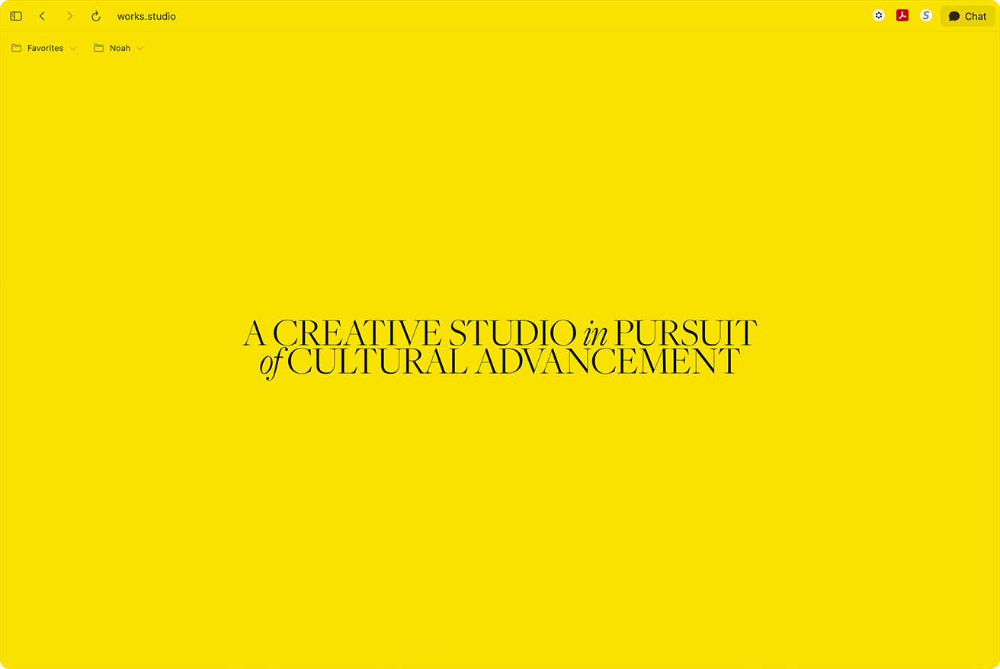
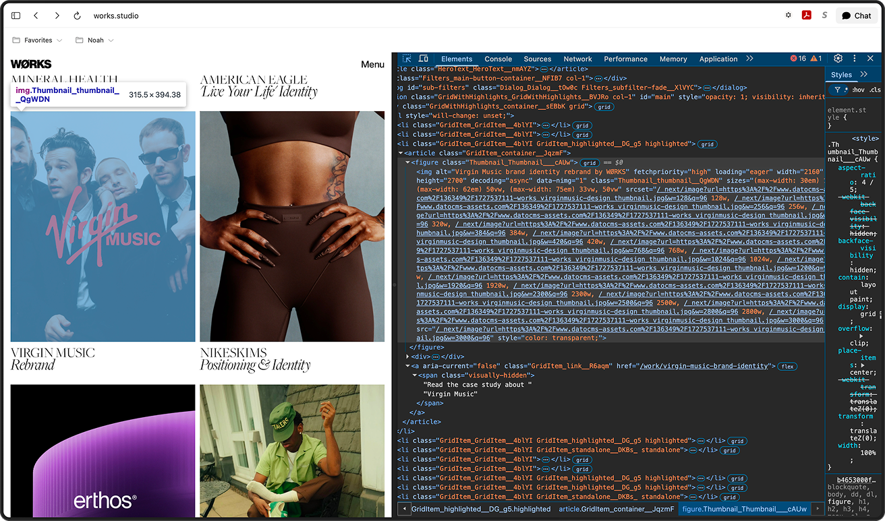

This project documents observations made while examining the works.studio website using the browser's Inspect Element tool. For each feature studied, an observation is recorded, followed by a likely explanation, the evidence supporting it, and anything left unconfirmed. The site examined is works.studio, a creative agency website. Three features are covered here: the loading animation, the About navigation behavior, and the project card hover previews.

When you first open the site, you’re met with a solid yellow screen with descriptive writing about the agency - an initial impression before you get to see all the work and projects. This screen fades with the text, with no spinner, progress bar, or any loading indicator before it disappears.
I’m guessing that a yellow overlay is sitting on top of the viewport that waits for the site to load. Once it does, it is signalled that the site is ready, and the overlay fades with the text. Scrolling is blocked during this time, and the site is unresponsive until loading is completed.
Using the inspect tool and looking at the code, I found that there is an element labeled as a loader, with its background color set to fade to fully transparent (shown in the screen recording), matching the function of the loading overlay. It is also marked as hidden from screen readers once complete, indicating the site treats it as finished at that point, and explains the responsiveness after the overlay disappears.
Whether the overlay’s duration depends on how long the page actually takes to load, or runs for a fixed amount of time regardless, has not been confirmed, and is difficult to find in the code (in HTML, atleast). This could probably be tested by slowing the network connection intentionally and seeing if the loading screens lasts longer. Oh well.
Hovering over a project image in the grid causes it to visually stand out from the others.
Each project card is an individual item in a list. When the cursor enters one, it is marked as "highlighted" — the rest are likely styled to recede by comparison.
Inspecting a card while hovering over it shows the word "highlighted" added directly to that card's code, and only that one. The exact style change tied to "highlighted" has not been confirmed — whether it dims the other cards, enlarges the hovered one, or both. Reviewing the associated style rule directly would settle this.

Hovering over a project image in the grid causes it to visually stand out from the others.
Each project card is an individual item in a list. When the cursor enters one, it is marked as "highlighted" — the rest are likely styled to recede by comparison.
Inspecting a card while hovering over it shows the word "highlighted" added directly to that card's code, and only that one. The exact style change tied to "highlighted" has not been confirmed — whether it dims the other cards, enlarges the hovered one, or both. Reviewing the associated style rule directly would settle this.